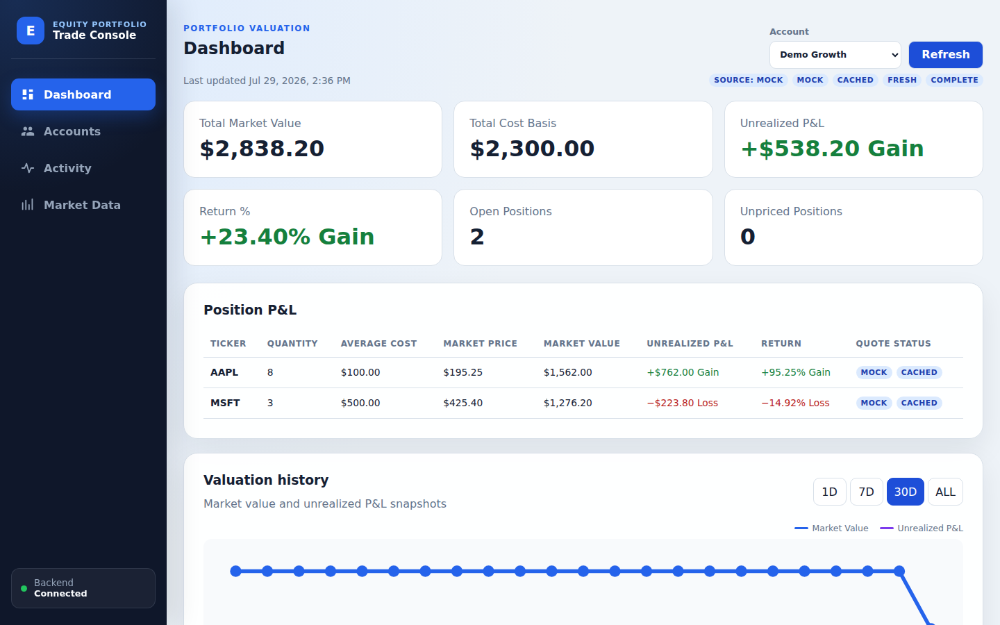
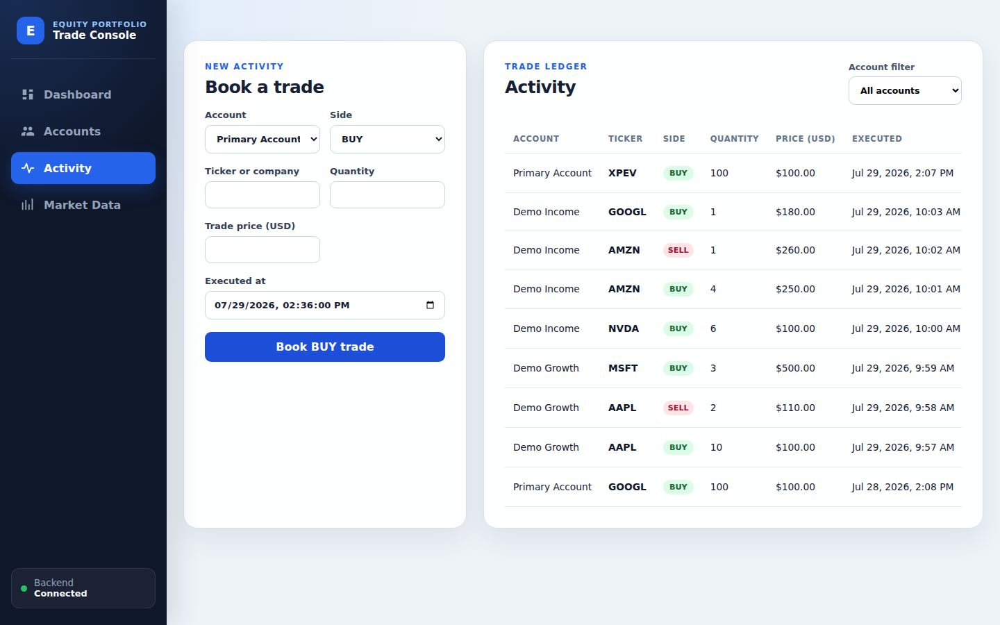
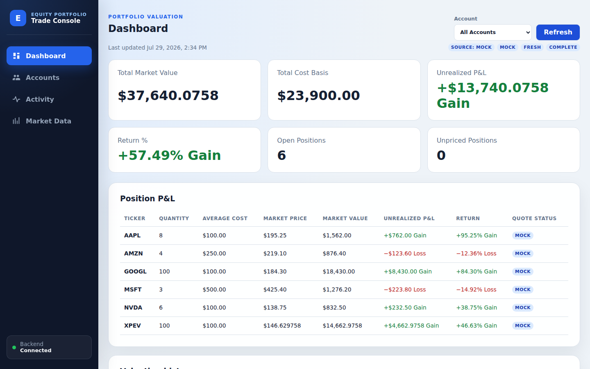
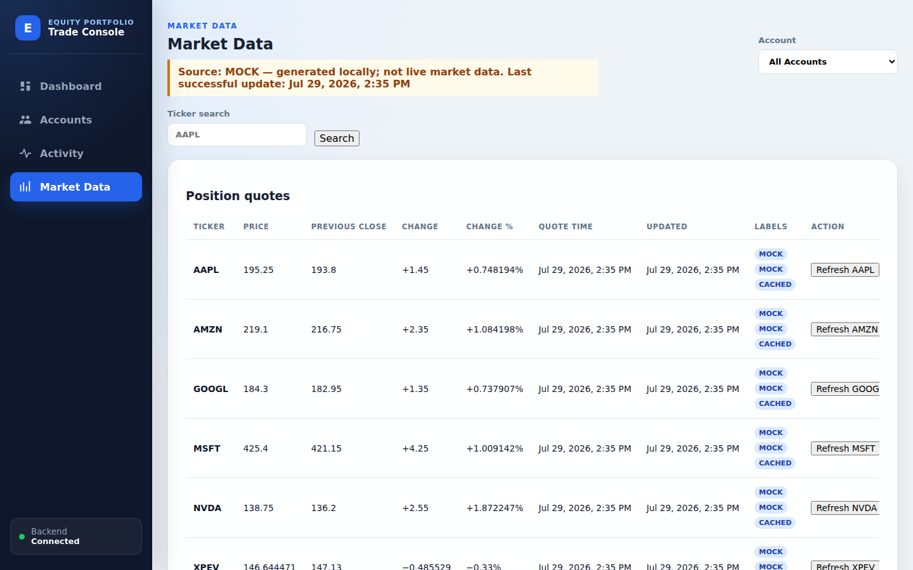

Group 5 · Give me five
From one trade to a trusted portfolio
A four-minute live demo: book, replay, value, and explain
Group 5 · Give me five
A four-minute live demo: book, replay, value, and explain
Demo · Step 01
Expected: AAPL quantity 8 and MSFT quantity 3, isolated to Demo Growth; one gain and one loss; source flags are explicit.

Demo · Step 02
Expected: “AAPL BUY trade booked successfully.” appears, with a new BOOKED row at the top of the ledger.

Demo · Step 03
Key result: deletion changes the effective business facts, so the position recovers, but the ledger row remains as audit evidence.

Then return to Dashboard and click Refresh to see market value and P&L recalculate with the restored quantity.
Demo · Step 04
Default Mock: explain the MOCK label and skip outage controls.
Finnhub demo: normal is FINNHUB / LIVE; during outage the retained price is explicitly CACHED / STALE.

Demo result
A verified AAPL trade became a BOOKED business fact.
The position moved 8 → 9 → 8 while audit evidence remained.
Every quote exposed its source, cache use, and staleness.
Trades are facts. Trust comes from explainable change.